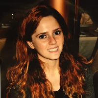
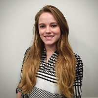
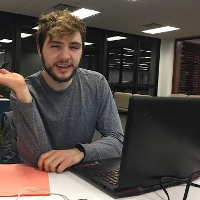

Gina - Editor
My name is Gina and I am the project group’s editor. My role as editor is to compile everyone's individual work into one, cohesive document that flows to increase the readability of the document. This may include editing, organizing, and reviewing the document. A large portion of editing the document is to correct the grammatical errors. Organizing the document includes making it look professional as well as following the stylistic guide lines set out. For example, I organize the document in a way that the illustrations are placed reasonably within the document for the reader to reference. Finally, when reviewing the document it is important to verify the numerical operations and facts. This is extremely important because our project cannot have errors or else it would be seen as invalid. After editing, organizing, and reviewing the document as a whole, I send out the final version to the project team to receive feedback and discuss what should be changed and what should be done differently in the future.
Clara - Project Coordinator
My name is Clara. I am currently a senior in the University at Buffalo's Mechanical Engineering Program. For our Senior Design Project I fill the role of Project Coordinator. My duties are to organize and delegate the tasks and deadlines associated with the design project. I also manage group meetings and set the agenda for any deviations from the Gantt chart. My main engineering experience comes from my undergraduate research in UB's Vortex Dynamics and Bio-Inspired Propulsion Lab. I have received the National Science Foundation's Research Experience for Undergrads for my research in mitigating wall effects experienced during flapping wing experimentation in closed fluid tanks. I am also the second author on the newly published thesis, Dye Flow Visualization of a Two-Degree-Of-Freedom Flapping Wing in Hover: Competing Effects of Pitching in Rotation. I am also the social coordinator of UB’s branch of the American Society of Mechanical Engineers. In this role I coordinate between the different project groups, and am in charge of social media and new member outreach.
Josh - Prototype Manager
My name is Joshua and I am the prototype manager for group 18. Our senior design project is to modify a turbine blade to have an active twist angle. As prototype manager, I am too ensure that all of the specs for the prototype are up to date and that every component is assembled properly. I was chosen to be prototype manager because of my knowledge of material selection and the work I have done with different manufacturing processes. I contribute to this project by discussing different ways that the prototype can be assembled as well as discussing different materials that the prototype can be fabricated from. I also help keep updated records from the previous semester about the design from MAE 451. I have all of the updated reports and all of the different gates that were submitted. This allows us to go back into the original design for the full twist angle design that was originally thought of.
Matt - Technical Manager
My name is Matthew. I am currently a senior in the University at Buffalo's Mechanical Engineering Program. My engineering experience mainly comes from my internship at the popular aerospace company, MOOG, where I worked in the department of Test Equipment, where we created the tools used in the analysis of parts created by MOOG. I also am the Secretary of UB’s chapter of the American Society of Mechanical Engineers. I am a project leader for the Filament Maker branch of the club, which melts down failed 3D printed parts and the rafts and other excess created in the 3D printing process, and turns it into new filament for the printer. I am also heavily involved in the Battle Bots project. In our senior design project, I fulfill the role of Technical Manager, which assigns me duties such as working at the system-level to define the critical tasks and subtasks of the project, as well as working with the prototype to conduct validation of design methodology and models.
Mark - Webmaster
My name is Mark and I'm the webmaster for the Group 18 project website and a senior Aerospace and Mechnical Engineering dual major at the University at Buffalo. As the only member of the group the group that is an aerospace student, I am often consulting the team on technical descisions regarding the basic analysis of our prototype, including some fluid mechanics as well as some thin-walled structural analysis similar to the Aerospace Structures course I've taken last year. As webmaster, my job includes compiling information from previous documents developed by the group and adapting them for presentation in this form. I used my basic HTML and CSS skills to modify a template, licensed under creative commons, to meet the goals outlined in the project website assignment. Throughout the semester this site will continue to be updated with content from myself and my fellow group members.